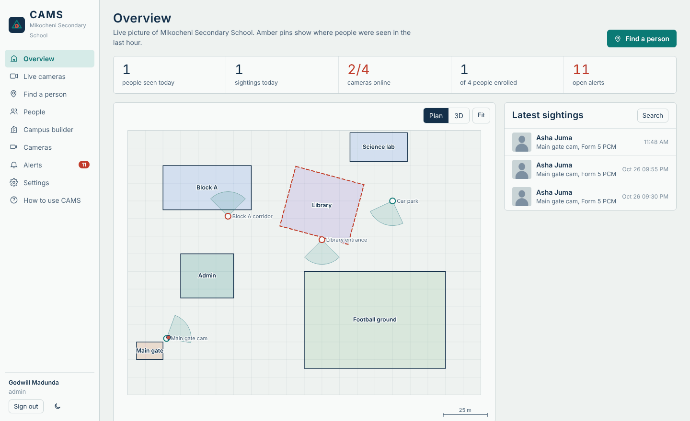
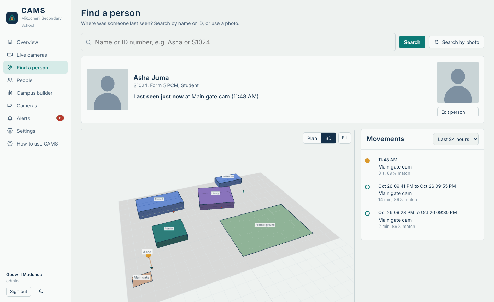
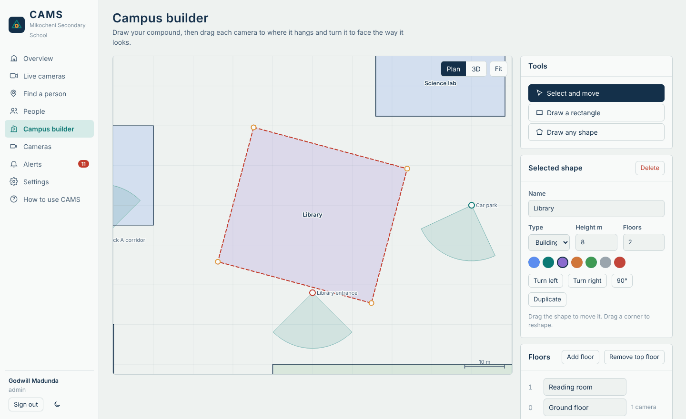
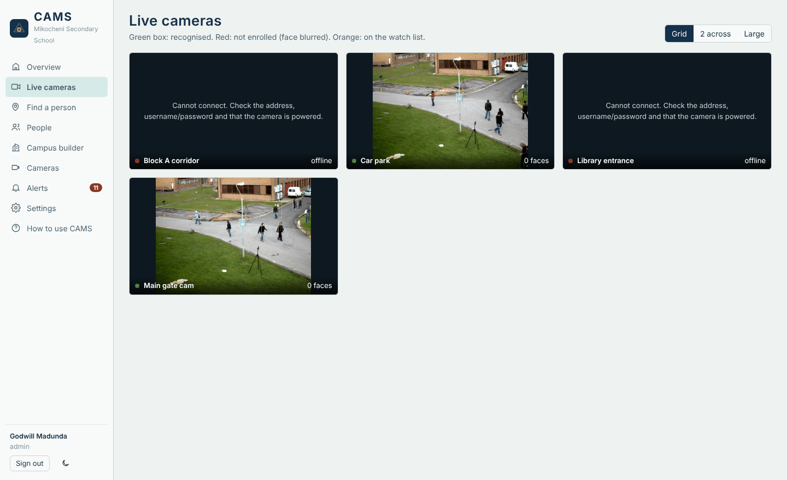
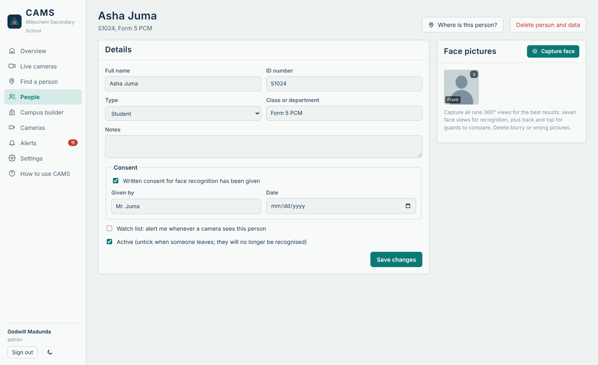
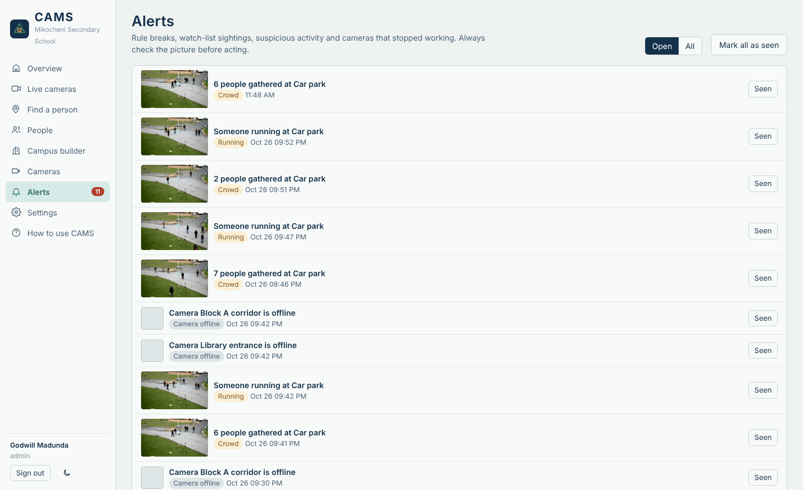

Know where everyone was last seen.
CAMS turns the cameras on your school or company compound into a search: type a name and see where and when that person was last seen, on a map of your campus.

Install it like any other program
No administrator password, no internet after download, nothing else to set up. One Windows PC runs everything.
Download
Get CAMS-Setup.exe (about 95 MB) with the button above.
Install
Double-click it and press Next until it finishes. It takes under a minute.
Open
CAMS opens by itself. Later, double-click the CAMS icon on your desktop. The first time, it asks for your school's name and an admin sign-in.
Windows may say "Windows protected your PC" because the installer is new and not code-signed. Click More info, then Run anyway.
What CAMS does
Everything a school security office needs to answer "where is this person?", plus the rules that keep it fair.
Find a person in seconds
Search by name, ID number, or a photo. CAMS shows when and where the person was last seen, their path across the campus on a 2D plan or in 3D, and a timeline for today or the last 30 days.

Build your campus
- Trace buildings, gates, fields and parking over a plan or satellite picture.
- Turn, move and copy buildings; add and name floors.
- Drag each camera to where it hangs and point it the way it looks.
- Set who may enter each area: staff only, not Form 1, named people, closed hours.

Use the cameras you already have
IP, Ethernet/PoE and NVR cameras (Hikvision, Dahua, Uniview, TP-Link, Reolink, Axis and any ONVIF camera), USB webcams and even phones. CAMS helps build the camera address, tests the connection, and can scan your network to find cameras.

Faces from every side
Enrol each person from nine views: front, half left, left, half right, right, up, down, back and top. A webcam wizard takes each picture when the pose is right, or upload photos or a short turn-around video and CAMS picks the best picture for each angle.
The seven face views are used for recognition. The back and top can't identify anyone, so they're kept only for guards to compare by eye.

Spot unusual situations
A person-detection AI watches each camera you choose and alerts you to loitering, crowds gathering, someone running, anyone present during closed hours, and cameras that are covered, blurred or turned away. Every alert comes with a picture.
These alerts point a guard at something to check. They can't tell what a person intends.

How it works
Everything happens on one Windows PC on your network. Video and faces never leave it.
Face prints, not photos
For recognition, CAMS turns each face into a list of 128 numbers. Two prints of the same person point the same way; CAMS compares them and only accepts close matches (you set how strict).
One record per visit
Seeing someone 50 times as they walk past a camera makes one sighting with a start and end time, not 50 rows. That is what the timeline and "last seen" use.
Live, not backed up
Each camera keeps only its newest picture. If the PC is busy, old frames are dropped rather than queued, so what you see stays current.
All inside the installer
The three AI models, the 3D map engine, the database and the screens are bundled. Data is stored in %APPDATA%\CAMS and stays if you reinstall.
Fair use is built in
Face recognition handles sensitive personal data. CAMS gives you the tools to use it lawfully; your school or company is responsible for doing so.
Consent on record
Each person shows whether consent was given, by whom and when. For students under 18, it comes from a parent or guardian.
Strangers stay anonymous
People who are not enrolled are blurred in the live view and saved pictures.
Delete on request
One button erases a person with every picture and sighting. Old records delete themselves after the days you choose.
The right people only
Admin, operator and viewer accounts. Every search, change and deletion is written to an activity log.
Stays on your PC
Nothing is sent to the internet or to TransitTech.
Check before acting
A match is a lead to confirm with your own eyes, never proof on its own.
Read the privacy guide before you enrol anyone. In Tanzania, follow the Personal Data Protection Act, 2022.
What you need
- Windows
- Windows 10 or 11, 64-bit
- Processor
- 4 cores (Intel Core i5 / AMD Ryzen 5 or better)
- Memory
- 8 GB RAM
- Graphics
- No graphics card needed
- Disk
- About 400 MB, plus room for sightings
- Cameras
- About 8 to 12 per PC at the default speed
- Internet
- Only to download the installer
Questions
Does CAMS need the internet?
No. After you download the installer, CAMS works with no internet at all. Cameras are reached over your local network.
Do I need administrator rights?
No. CAMS installs for the person who runs the installer, like Scratch or Zoom. An IT admin can install it for every user with CAMS-Setup.exe /ALLUSERS.
Windows says "Windows protected your PC".
That warning appears for new programs that aren't code-signed. Click More info, then Run anyway.
Where is my data, and is it removed if I uninstall?
It is in %APPDATA%\CAMS and is kept when you uninstall or update, so you don't lose people or settings. Delete that folder to remove it.
Can other computers open CAMS?
By default only the PC where CAMS is installed can use it. IT staff can allow other PCs on the same network; see the user guide.
How do I update?
Download the latest CAMS-Setup.exe from this page and run it. It replaces the program and keeps your data.
Try CAMS on your campus
Install it on one PC, add a camera and enrol yourself. You'll see your own sighting within a minute.
Download CAMS for WindowsThen follow the step-by-step user guide.